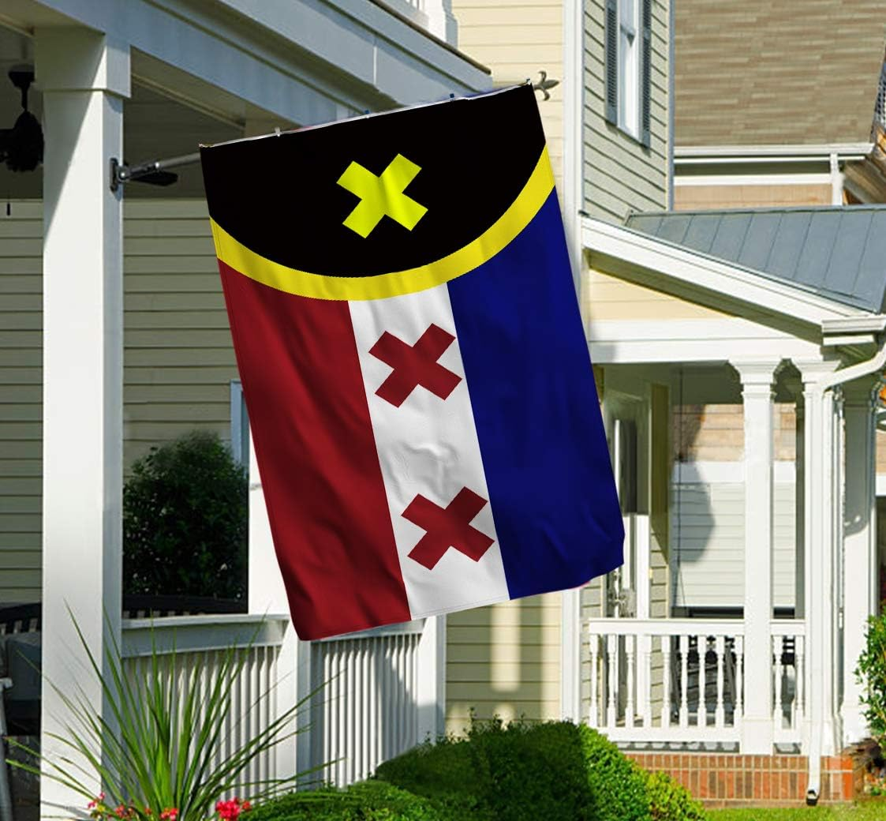

Sommige mensen vinden dat Wilbur Soot sommige dingen niet handig heeft aangepakt, maar je moet de kunst van de kunstenaar scheiden. Het plot en de wereld die Soot heeft neergezet zijn pareltjes en ik weiger langer mijn bek erover te houden uit angst voor de woke.
De vlag is vet en het caracter Wilbur heeft nooit iemand gebeten! Dus hou je bek.
Ik haat feminisme. Waarom willen vrouwen altijd verwoesten wat de wereld de moeite maakt om in te leven???????
